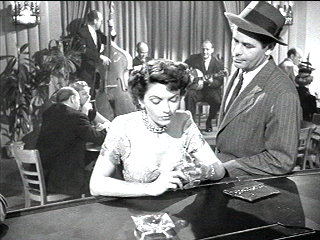

| Big Heat, The/ B+, B+ |
| Columbia/1953/89/FS 1.33/BW |
The Big Heat is a cop drama, a
revenge drama, a gangland drama, a story of corruption and good cops
versus bad cops. Detective Dave Bannion, family man and honest cop in a
corrupt town, uncovers the stench of police department corruption that
irrevocably draws him into a black hole. Bannion must face his own
darkness when his life explodes into a nightmare.
The Big Heat commands your
attention from the very first moment where it starts off with a definitive
gun shot. Director Fritz Lang is a fine cinematic story-teller. It moves
at a very quick pace from stage to stage, yet all the character evidence
is complete before moving on. The Big Heat is told in clean,
simple, straight forward strokes. Lang moves in a logical order and he
sets relationships and characters up with great skill. Some of the
compositions and visual stylizations of the photography are really well
done. A good example of the seamless blending of the camera and story
technique is when Dave Bannion goes into The Retreat to question the
bartender. When he leaves, there's a reflection back into the bar on the
window of a telephone booth he passes. This effectively takes the viewer
back into the bar and then brings the bartender into the phone booth. Its
a subtle yet simply elegant flourish.
 |
|
Checking out the
"B" girl. ©Columbia
|
The film is often considered amongst the
luminous classics of Film Noir. The fine Film Noir standard bearer caught
the tale end of the wave of tough black and white films as the fifties
began to give way to more and more color productions and widescreen. The
Big Heat is certainly a fine example of Fritz Lang's American work.
Glenn Ford is very fine as Detective Dave Bannion.
Ford's a no-nonsense actor. He invests Bannion with honesty, a touch of
self-righteousness, that becomes distorted by pain. Ford lights up as
family man, doesn't pull his punches as a cop, and as a husband seeking
justice he gets really tough. Ford is surrounded by some terrific central
supporting performances. Lee Marvin is slithery and slimy as Vince Stone,
strong arm enforcer for mob boss Mike Lagana. He's tough, he's nasty, he's
unpredictable. Alexander Scourby does not fall into caricature
mannerisms in his convincing portrait of Lagana. Gloria Grahame is a force
of sexual nature as Stone's girl Debby. She's seductive, she's playful.
she's a drunk walking tightrope. She practically glows in Lang's camera
lens. Her skin gets radiant treatment. Lang lights her in a special way to
emphasize the pay-off even more. That first introduction with her bouncy
to the music mixing a batch of cocktails is unforgettable. Under Lang's
direction, the performances are unusually unadorned. Even Marvin, an actor
who can certainly go over the top, is kept in effective control by the
director's choices.
Settings are effective. Bar scenes and apartments
feel authentic. Fight sequences, whether fisticuffs or guns, are well
staged. It's a finely detailed film, one worth seeing and enjoying many
times over. Perhaps one can site as carping weaknesses the shallow
performances of some of the peripheral cops, but it doesn't diminish the
overall impact. Ford's the force in this film complimented beautifully by
Grahame's touching performance.
A wholly satisfying transfer. Images are quite
sharp. Grain is very fine adding to the look of classic film stock. There
are some scenes that have an uneven focus, but it appears to be the
artistic choice of the director. Black levels are very natural. Gray scale
range is very natural. Lighting is excellent. There are some specs of dirt
on the film elements, but they are minor. There are no major scratches or
glitches. The sound has very low level hiss that's hardly perceptible and
you pretty much had to strain to hear it. Other than that, dialogue is
very clear. |
|
|
|

Selections from the Feature
Archive include articles on Akira Kurosawa, Frank Darabont, Blonde Bimbos, Hollywood Street Gangs, or Vietnam: The Hollywood Pariah, and many
more....

Click on the image of The Heistmasters for an interesting feature on
the tough guys that pull off the big jobs.

The Movie Poster Archive
includes extensive poster images from the films of stars like Susan
Hayward, Kirk Douglas, Katharine Hepburn and many more. Our featured
star is Richard Widmark.

Le Trou/ A-,A-

Outstanding prison escape procedural,. Le Trou is filmed with
stunning determination. A beautiful transfer from very good sources
elements. Black and white with subs.

 Have you visited Home Theater Talk
lately? One of the friendliest places on the Net for Home Theater and DVD
discussion, you can get help for installation problems or simply share
your opinions with other Vidiots. Have you visited Home Theater Talk
lately? One of the friendliest places on the Net for Home Theater and DVD
discussion, you can get help for installation problems or simply share
your opinions with other Vidiots.

Manufacturer of computer-video interfaces, switchers, distribution
amplifiers, computer-video scan converters, and high resolution cable.
Found in many high end home theater systems.
 Brad Lang
continues to add more interesting material to the extensive collection at Classic Movies.
Everything from actors and actress to your favorite directors is linked at
the site. Brad Lang
continues to add more interesting material to the extensive collection at Classic Movies.
Everything from actors and actress to your favorite directors is linked at
the site.

DVD reviews for women
from a woman's point of view
|